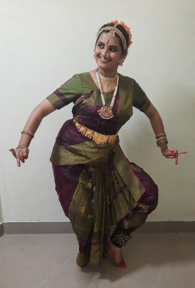
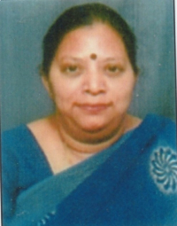

<div class="container pt-5">
  <div class="container-block">
    <div class="mb-5">
      <h2 class="page-title bottom-line">BHARATANATYAM</h2>
      <h5 class="page-title all-caps">Vidushi Dr. Nagalakshmi Nagarajan</h5>
      <div class="wrapper">
        <div class="img-wrapper">
          
        </div>
        <div>
          <p>
            Vidushi Dr. Nagalakshmi Nagarajan is a senior Bharatanatyam artist
            with over 30 years of training in Bharathanatyam from Gurus Vidushi
            Vasanthalakshmi B K and Dr. Vasundhara Doraswamy and Natyashastra
            Karanas from Dr. Shobha Shashikumar. She has a Vidwat from KSEEB, MA
            in Bharatanatyam, has cleared the NET exam for Assistant Professor,
            and her PhD in Dance on “Rasotpatti in Laasyangaas – An Analytical
            Study” under Professor Dr. K Kumar from University College of Fine
            Arts, University of Mysore. She has authoured articles on dance for
            important journals, a UGC resource person for the refresher course.
          </p>
          <p>
            She is a certified Yoga teacher, learner of Kalaripayattu and
            Kathak, a scholar in Sanskrit and founder of Champaka Academy©
            Mysuru. She has served as panel member and examiner for the
            examinations conducted by KSEEB and ABGMVMandal. Her students are
            trained for the dance exams of junior, senior and vidwat. With over
            25years of experience in teaching, her sessions are always
            integrated with yoga and fitness to help learners enjoy
            Bharatanatyam. She is conducting many dance festivals, music
            festivals, presenting lifetime achievement awards and many more.
            Being a committee member of BVB, she has taken up the initiative to
            give an uplift to the art classes conducted at Kalabharati.
          </p>
          <p>
            She is blessed to perform at the temple sanctum sanctorum of Sri
            Baala Raama at Ayodhya soon after Pratishtapana and has performed at
            prestigious stages over the years. She has many thematic solo and
            group choreographies including, Vasudeva Abhinandanam for 150 th
            birth anniversary of Sangitha Kalanidhi Mysore K. Vasudevacharya,
            popular renditions of Bharata Ratna Smt. M.S. Subbalakshmi, Kanaka
            Purandara Bhakthi Sudha, Sri Krishna Leela Vibhuthi of DVG, Devi
            Vaibhavam from the Devi Bhagavata Puranam, Devi Bharati Kriti
            Samarpanam, Darpadalanam - Kulavichaarah by Kashmiri poet
            Kshemendra, Raamam Bhaje, Kshaatra Seethe in Ashokavana – Sundara
            Kaanda of Ramayana on Torave Ramayana, Srimad Shankara Digvijayah –
            Divyaadbhuta Baalyam by Sri Madhava Vidyaranya on the life of Sri
            Shankaracharya, Bharata Maata feature, exclusive performances for
            Mysore Sadashivarao Kritis and Sri Jayachamaraja Wodeyar Kritis.
          </p>
        </div>
      </div>

      <h5 class="page-title all-caps mt-5">Soundarya M S</h5>
      <div class="wrapper">
        <div class="img-wrapper">
          
        </div>
        <div class="mb-5">
          <p>
            Soundarya M S is an accomplished artist who is currently pursuing an
            M.Sc. in Data Science at Karnataka State Open University. She holds
            a Senior Certificate from KSEEB and is pursuing Vidwath and Diploma
            in Bharatanatyam under the guidance of her Guru Dr. Tulasi
            Ramachandra. Having started learning the art at the age of five,
            with 17 years of learning, she has been working as a dance teacher
            for the past 3 years.
          </p>
        </div>
      </div>
    </div>

    <div class="clear"></div>

    <h2 class="page-title bottom-line">KARNATAKA MUSIC</h2>

    <h5 class="page-title all-caps">Vidushi Suma Parameshwar</h5>
    <div class="wrapper">
      <div class="img-wrapper">
        
      </div>
      <div>
        <p>
          Vidushi Suma Parameshwar is a distinguished Karnataka vocalist and
          music educator who has made significant contributions to Indian
          Classical Music. Having completed her Vidwat from KSEEB in the year
          1995, since then she has trained many students, organised music
          festivals and pioneered innovative teaching methods to promote
          Karnataka music. Her initial training was from Vidushi Shantamma and
          Vidwan Chandrashekar, and later from Vidushi Usharajan. She pursued
          her senior and vidwat learning from Vidushi M L Bharati at Mysuru.
          Recognised nationally and internationally, she has received numerous
          accolades for her work, including contributions to music therapy and
          rural outreach programs. Her efforts in preserving traditional art
          forms and blending them with modern approaches highlight her
          dedication to enriching and propagating Indian Classical music.
          “Karnataka Kala Ratna” and “GanaSaraswati” are among the many titles
          she has received from prestigious organisations. She also has an
          Honorary Doctorate from National Virtual University for Peace and
          Education.
        </p>
      </div>
    </div>

    <h5 class="page-title all-caps mt-5">
      Sriranjini Sankighattam Lakshminarasimha
    </h5>
    <div class="wrapper">
      <div class="img-wrapper">
        
      </div>
      <div>
        <p>
          Sriranjini Sankighattam Lakshminarasimha is a highly goal-oriented
          professional with a diverse back-ground in administration, education,
          arts & community engagement. An engineering graduate from JCE,
          choosing music as her passion and profession, with her basic lessons
          from her father who was a musician, she went on to complete her MA in
          Karnataka Music (guided by Vidushi Surabhi Pustakam) from Gangubai
          Hangal Music Unversity at Mysuru. She has extensive experience as a
          music teacher, program co-ordinator and facilitator in various
          cultural and educational settings. Sriranjini excels in promoting
          sustainability, organising events and using music as a tool for
          learning and mental health awareness, fostering creativity. Her roles
          have ranged from teaching South Indian Classical music to managing
          community projects, conducting workshops and leading organizational
          development initiatives. She has been effective in planning and
          executing music workshops for refugees around London during her stay
          there. She has been teaching for 6 years, starting as a music
          facilitator of SAPA an arts learning initiative of Dr. L Subramaniam
          and continuing at many platforms.
        </p>
      </div>
    </div>

    <h2 class="page-title bottom-line mt-5">HINDUSTANI MUSIC</h2>

    <h5 class="page-title all-caps">Pandith Prabhu Rao</h5>
    <div class="wrapper">
      <div class="img-wrapper">
        
      </div>
      <div>
        <p>
          Pandith Prabhu Rao is a versatile Hindustani musician, who has learnt
          music since a very young age, in his home town in Gulbarga district.
          He is trained under Padmabhushana Pt. Dr. Puttaraja Gawai. Completing
          his Vidwat with the KSEEB, he is a passionate teacher and has trained
          many students in Mysore.
        </p>
      </div>
    </div>

    <div class="clear"></div>
  </div>
</div>
